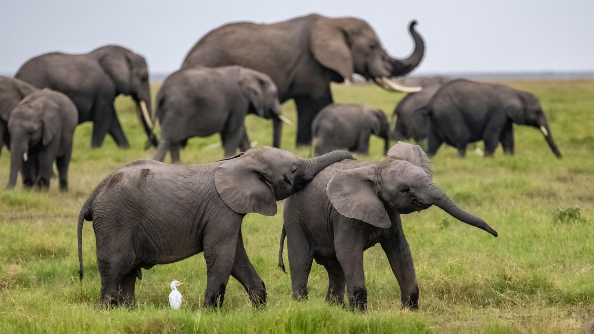
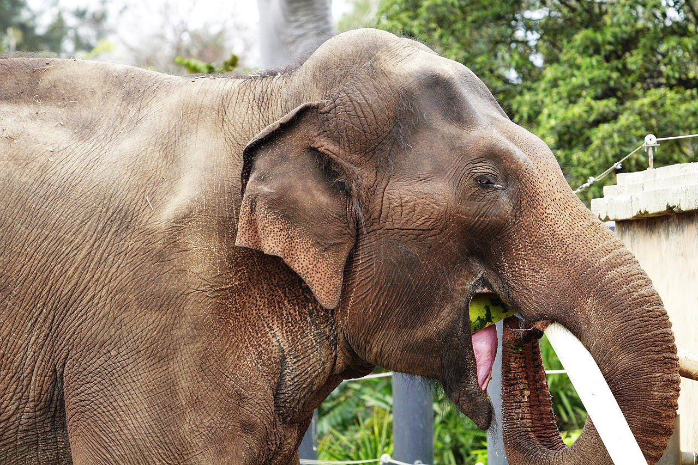

Životinja: Afrički slon
Naučno ime: Loxodonta africana
Životni vek: 60 - 70 godina
Visina: 260 cm
Porodica: Elephantinae
Masa: 3000 - 6000 kg
Afrički slon je najveći kopneni sisar na
svetu i najveći u rodu Loxodonta kojem još pripada i afrički šumski
slon. Ranije su ove dve vrste bile klasifikovane kao jedna. Afrički
slon je ogromna životinja. Dužina tela se obično kreće od 6 do 7,3
metara, prosečna visina mužjaka u ramenima se kreće oko 3,20 m, a
težina oko 6,00 t, ženke su mnogo niže, visoke su u ramenima oko 2,60
m i teške 3,00 t. Najkrupnije jedinke su dostizale visinu
od 3,96 metara u ramenima i težinu od 10,4 t. Slonove karakteriše
velika glava na kojoj se nalaze dva velika uha koja pokrivaju ramena i
odaju suvišnu toplotu; dugačka i mišićava surla; upadljive bele kljove
koje poseduju oba pola i kratak vrat. Imaju valjkasto, glomazno telo
koje počiva na četiri dugim i teškim nogama i na čijem kraju se nalazi
relativno kratak rep sa crnim dlakama. Kljove za godinu dana porastu
između 15-18 cm. Surla koju sačinjava više od sto mišića teži oko 150
kg, nastala je spajanjem gornje usne i nosa i evoluirala u neverovatno
pokretan i osetljiv organ mirisa i dodira i vrlo korisno oruđe.
Životinja je zaštićena teškim ali savitljivim slojem sivo-braon kože.
Zadnje noge imaju tri prsta koji formiraju kopito, dok broj na
prednjim nogama varira između četiri i pet.

Surlaši

Životinja: Azijski slon
Naučno ime: Elephas maximus
Životni vek: 48 godina
Visina: 2.4 - 3 m
Porodica: Elephantinae
Masa: 3,500 – 4,000 kg
Azijski slon ili indijski slon je jedina vrsta u rodu Elephas i jedna od tri savremene vrste slonova. Nešto je manji od afričkog rođaka i ima drugačije životne navike. Azijski slon se po veličini i spoljašnjem izgledu razlikuje od afričkog slona. Na prvom mjestu je razlika u veličini ušiju, što je rezultat nešto nižih temperatura i vlažnije klime koja vlada na staništu azijskog slona, jer je prvenstvena uloga velikih slonovskih ušiju raslađivanje. Uši su široke oko 75 cm, a duge 60 cm. Visina azijskog slona je nešto manja od afričkog i iznosi oko 3 m, dok je dužina tijela oko 6 m. Mužjaci su teški između 3,500 kg i 4,500 kg, a mogu dostići težinu i od 5.000 kg. Ženke su nešto lakše i njihova težina dostiže najviše 3.000 kg. Mužjak azijskog slona dostiže visinu od 3 m, a ženka oko 2,4 m. Imaju debelu kožu koja ih donekle štiti od nametnika, a debljina se kreće između 2 cm i 2,5 cm.
Naučno ime: Elephas maximus
Životni vek: 48 godina
Visina: 2.4 - 3 m
Porodica: Elephantinae
Masa: 3,500 – 4,000 kg
Azijski slon ili indijski slon je jedina vrsta u rodu Elephas i jedna od tri savremene vrste slonova. Nešto je manji od afričkog rođaka i ima drugačije životne navike. Azijski slon se po veličini i spoljašnjem izgledu razlikuje od afričkog slona. Na prvom mjestu je razlika u veličini ušiju, što je rezultat nešto nižih temperatura i vlažnije klime koja vlada na staništu azijskog slona, jer je prvenstvena uloga velikih slonovskih ušiju raslađivanje. Uši su široke oko 75 cm, a duge 60 cm. Visina azijskog slona je nešto manja od afričkog i iznosi oko 3 m, dok je dužina tijela oko 6 m. Mužjaci su teški između 3,500 kg i 4,500 kg, a mogu dostići težinu i od 5.000 kg. Ženke su nešto lakše i njihova težina dostiže najviše 3.000 kg. Mužjak azijskog slona dostiže visinu od 3 m, a ženka oko 2,4 m. Imaju debelu kožu koja ih donekle štiti od nametnika, a debljina se kreće između 2 cm i 2,5 cm.
